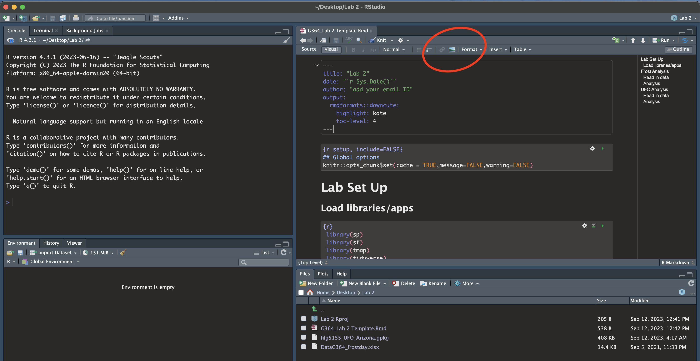
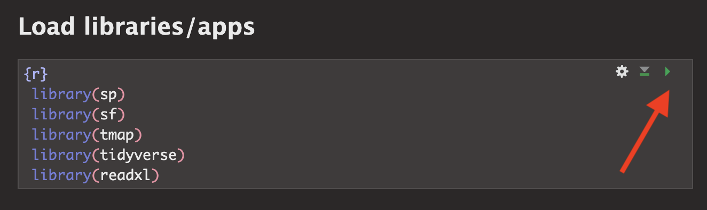
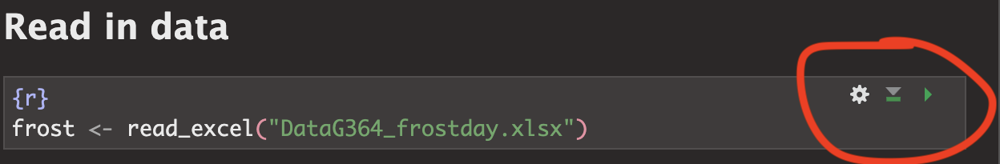
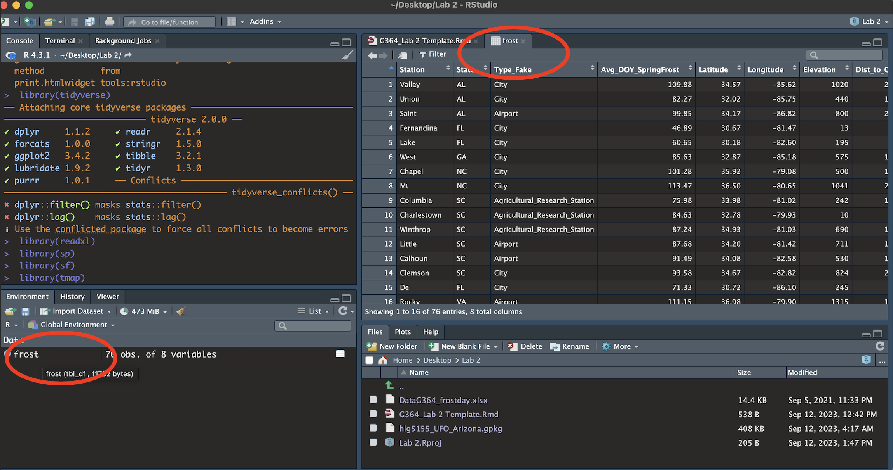
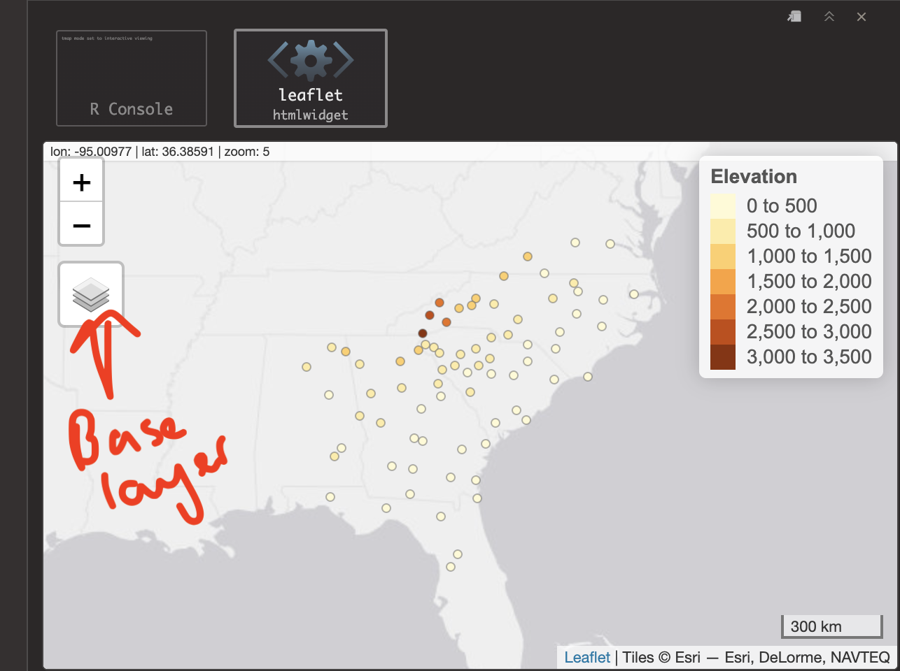

Lab 2: Playing with data
This is a two week lab. If you are new to R, I suggest doing the
data-camp, set-up and frost analysis this week, then next week starting
the UFO analysis.
This is a two week lab. If you are new to R, I suggest doing the data-camp, set-up and frost analysis this week, then next week starting the UFO analysis.
The aim of this lab is to start some spatial data analysis and to recap what you learned in Lab 1. By the end of this lab you will be able to:
Prove to me you can set up the labs
Read in data from an excel file and a spatial file
Conduct exploratory data analysis
Wrangle a table of data
Make initial plots and maps for two case studies
See The Canvas page here, or go to canvas for assignment guidelines. You can use either the website base RStudio/Posit Cloud OR R-Desktop for this lab
Data Camp
IMPORTANT, Click this link to be added (for free) to the class datacamp. You will need to have signed up using your PSU address
Optional but recommended
If you felt lost during week 1, I highly recommend completing chapter 1 of this data camp course. It will help you understand the next bit of the analysis. It’s free if you signed up using the link above.
I will award 5 participation points for anyone who completes chapter 1.
Getting started
2. Create your project
Create a new project in R for Lab 2 and make sure it’s in your GEOG 364 folder.
For R-Desktop, see Tutorial 3B
For Posit Cloud, see Tutorial 3C
Take a screenshot of R studio screen that proves you have set up your project correctly
- Hint, how
to check you are in a project)
To take a screenshot on a mac: PressShift + Command (⌘) + 4. Your cursor will change to a crosshair. Click and drag to select the portion of the screen you want to capture. Release the mouse button to take the screenshot. It will be saved to your desktop. Re-name the file and move to your GEOG-364 Lab 2 folder.
To take a screenshot on a windows machine, try one of these or ask around/Harman: Press *Windows key + Shift + S. This is the snipping tool. On older machines, tryWindows Logo Key + PrtScn.Re-name the file and move to your GEOG-364 Lab 2 folder.
- Hint, how
to check you are in a project)
3. Get the files
Download these three files from Canvas
and place them in your lab 2 folder.
If you are on the cloud, here
is how to upload files:
The lab template
The frost data
Your PERSONAL UFO dataset
(f this doesn’t work or you can’t find your file, there’s no panic. Let Harman know - we will get it fixed by the end of the day
4. Edit your template
Rather than create a new markdown file, this week I want you to use a
template that I made. You should have just downloaded this from Canvas.
Make sure it’s in your Lab 2 folder and you’re running your project.
Go to the file quadrant and click the G364_Lab 2 Template.Rmd file.
You will hopefully see a little yellow bar asking you to install some libraries/package. Say yes. Alternatively, use the install package command you used last week to install the sp, sf, tmap, tidyverse and readxl packages.
Click “visual” mode. Your screen should now look like the screenshot below. If not, ask for help
Click knit. You might have to re-save. Make sure to include your ID in the filename. You should see the html appear.
Go back to R studio.
- In the Set-Up section, explain to me what an R project is in the text and include your screenshot, explaining how it proves you are running your Lab 2 project.
- Hint, to include a picture, click the visual mode picture button
(see circle in pic above).

5. Libraries
Last week we downloaded the rmdformats package. In the section above, hopefully you just downloaded several more (step 3). This is like going to the app store to get a new banking app.
Even though they are downloaded, we need to load them EVERY TIME we want to use them (in the way you click on an app on your phone before you can use it). This is what that library code-chunk does at the start of the script.
Press the green arrow on the right of the code chunk to run the code inside it.<br>You will see a load of “welcome text” telling your details about the packages you just loaded.<br>Press the green arrow AGAIN. The text should disappear unless there is an error. If you get errors, you might still need to download those packages.
<br>YOU NEED TO RE-RUN THIS CODE CHUNK EVERY TIME YOU OPEN R.

Frost Analysis
Finally some analysis! We are going to conduct some exploratory data analysis on average last spring frost dates across the South East USA.
To to this, we are going to follow these steps:
- Investigate the topic before touching the data
- Read the excel file containing the data into R
- Calculate summary statistics and “wrangle” the data
- Make some initial plots & maps
6: Exploratory Investigations
Before we touch any data, it’s important to start with words. We need to summarise what we already know about the dataset, the population under study and any important context.
The aim of this lab is to analyse the “average last frost dates”
obtained from weather stations across the South Eastern USA. E.g. what
day of year, on average, is the final day to get frost. We are
using data obtained from this dissertation to assess the spatial
distribution of average spring frost dates: Parnell, 2005, “A
Climatology of Frost Extremes Across the Southeast United States,
1950–2009”:
https://www.proquest.com/openview/d5a7301f0cbe941ead48c96888f791b8/1?pq-origsite=gscholar&cbl=18750&diss=y
Read the abstract of the study above to understand the dataset (click the link and skim read pages iv and v, e.g. the bit before the table of contents).
Write a few sentences in the appropriate section of your lab report to explain what we are doing.
7: Load the data
I have already provided the command to load the data into R. Press the green arrow to run.

This loads the data stored in “DataG364_frostday.xlsx” into R, then temporarily saves the data into a table called ‘frost’. That’s what the ‘arrow’ is doing in the command. It does the stuff on the right (loads the file from excel, then the arrow means ‘store this as’ frost)
This code will only work if - you have run your library code chunk and if you have downloaded the readxl library - if your file really is in your lab 2 folder - If you are running your project
Otherwise you will see an error saying it can’t find the command.
You should see the frost data appear in the ‘environment tab’. Click the NAME to take a look (see screenshot below). Each row represents a weather station.

You will see a spreadsheet/table/data.frame with these columns:
- Station: The name of the weather station
- State: The US State that the station resides in
- Type_Fake: A synthetic column I added to put in a “type” of station
- Latitude: The latitude of the station (degrees)
- Longitude: The longitude of the station (degrees)
- Elevation: The elevation of the station (feet)
- Dist_to_Coast: The distance from the station to the coast (miles)
- Avg_DOY_SpringFrost: The Day-Of-Year of the average final spring frost date for that station
When I say Day-Of-Year, I mean a number from 1-365 representing the month/day of the year e.g. Jan-1:1, Jan-2:2… Jan-31:31, Feb-1:32… Dec-31:365. We use this number instead of the month/day because its easier to analyse.
8: Intro analysis
This is great, but the joy of R is that it is easy to do more complex things. Click back to your lab script.Before we were applying commands to a single word or number e.g. (cos(30)). Now, we can apply commands to a whole column of data. E.g.
mean(frost$Elevation)
tells the computer to apply the mean command to the Elevation column inside the frost table. (the $ means “column” and when you type it, it will bring up a list to choose from).
For each question below, leave a few blank white lines (or R can get confused) and make a new code chunk for each piece of code.
WRITE YOUR CONCLUSIONS UNDER EACH CODE CHUNK IN A FULL SENTENCE WITH UNITS!
Calculate the mean of the Dist_To_Coast column. e.g.
mean(frost$Dist_To_Coast)Use the
maxcommand to find the maximum Elevation in the dataset.Google the command for the standard deviation in R. Find the standard deviation of the distance of the weather station to the coast.
We can also apply commands to non-numeric data. For example, maybe we want to count the occurrences of some category in our dataset e.g. how many stations are in each US State. To do this, we use the table command:
table(frost$State)Use this to work out how many weather stations there are in Alabama in our data?R includes some fantastic summary commands that we can use on the whole dataset. Run
summary(frost)and explain what is going on.We can also look at how many rows and columns of data there are. There are LOADS of ways of doing this. Have a look at the
dimcommand, or thenrowcommand or others, to show me how many weather stations there are.Press knit, check there are no issues with the code
9: Plots and maps
a) Histograms
It’s also very easy to make professional plots and maps in R. This used to be much harder and there are many packages you could use. Today we are going to focus on the ggplot2 package.
First use this code to make a basic histogram of the Avg_DOY_SpringFrost column. To understand what is going on, see this great tutorial: https://365datascience.com/tutorials/r-tutorials/ggplot2-histogram/
To interpret the results, check out this wonderful tutorial - https://flowingdata.com/2014/02/27/how-to-read-histograms-and-use-them-in-r/
We can improve our graph very easily. Try running this code.
ggplot(frost, aes(x=Avg_DOY_SpringFrost)) +
geom_histogram(bins=8,
fill="#108A99",
color="white") +
xlab("Average day of year of the last spring frost") +
ylab("Number of weather stations") For a WHOLE LOAD of other formatting options, see here: http://www.sthda.com/english/wiki/ggplot2-histogram-plot-quick-start-guide-r-software-and-data-visualization
- Now make your own histogram of the Latitude column of the
frost data.
Go wild, impress us with your formatting!
- Press knit, check there are no issues with the code
b) Quick maps
Finally, we can use the tmap package to have a look at some plots.
First, we loaded our data as a standard old Excel file. So we need to teach R that it has spatial coordinates. To do this, run this command. If it works, nothing should outwardly happen, but you should see in your environment quadrant that a new variable called frost.spatial has turned up.
# In future classes we will break down what this is doing
frost.spatial <- st_as_sf(frost,
coords =c('Longitude', 'Latitude'),
crs = 4326)IMPORTANT. IF YOU GET A WEIRD ERROR TRY RE-TYPING ALL THE QUOTE MARKS AROUND LONGITUDE AND LATITUDE. The copy/paste sometimes messes up.
Now we can use the QTM (Quick Thematic Map function) to have a look! Try this code. It should make an interactive map by default and you can turn on different basemaps through clicking the layer symbol on the map.
# This sets the mode to an interactive map.
# If your computer struggles, try changing 'view' to 'plot'
tmap_mode('view')
qtm(frost.spatial,
dots.col='Elevation')
- Now make your own map of the Avg_DOY_SpringFrost column in
the frost.spatial dataset. You can see a load more style options here https://www.rdocumentation.org/packages/tmap/versions/3.3-3/topics/qtm
- Press knit, check there are no issues with the code
10. Summarise what you have found
Finally, write a paragraph summarising
What the study was trying to achieve
Details of the dataset (how many weather stations, summary statistics etc etc)
What spatial patterns do you see in the average last spring frost dates in the dataset?
From looking at your maps/histograms etc, what factors or processes do you think influence those patterns?
In the future & in the UFO section, we will integrate this writing around your analysis, but for this week, I wanted you to focus on really understanding the code.
UFO Analysis
Congrats! If you have reached this far, you have at least received a C for the bare minimum and a B+ for doing it all well. :)
OK, so in the frost example, we went through slowly and in detail. In the UFO analysis, I want you to use what you learned on a new dataset. Remember you can copy/paste/edit your code from above!
11. Reading in the data
You should have downloaded your unique UFO dataset from the Canvas page into your Lab 2 folder. It should have your e-mail ID in the title. Our first challenge is that it is not an excel file. Instead it’s a ‘gpkg’ file, a special type used for storing spatial data. For example, mine is “hlg5155_UFO_Wales.gpkg”
In your UFO /Reading-In-Data section of your lab report, make a new code chunk and use this code to load your dataset.
e.g. for me, it would be
ufo <- st_read("hlg5155_UFO_Wales.gpkg"). When you run
the code chunk, it will load the data from the file and save it into
your environment to a spreadsheet we have called ufo.
Press knit, check there are no issues with the code.
Click on the name ufo and have a look!
12. Your own analysis
I have given each of you data of reported UFO sightings for either a single US State or a single country.
The object of analysis, .e.g each row, is a single UFO sighting
Your columns are:
Year - The year of the sighting
Month - The year of the sighting
Day - The year of the sighting
Hour - The hour of the sighting (24hr clock e.g. 23=11pm, 00=midnight)
Sighting_Type - what type of UFO was seen?
Sighting_Duration - how long was the sighting IN SECONDS
Region - your region/country/state
geom / geometry - a special internal R column containing the spatial location of the sighting.
Your dataset came from here: https://github.com/planetsig/ufo-reports and I split it into separate states and countries. The raw data was collected here: https://nuforc.org/
Your job
Write us a summary of this dataset in the UFO section of your RMarkdown document, using the code you have learned above (or any other code/resources).
For example, your write up could include:
A summary of where the data came from/how it was collected - and your guesses about any spatial patterns.
What country are you focused on, how many sightings are there in your database, when did they start/end etc.
The average duration, and a histogram of Sighting_Duration
A-grade Bonus -try making a boxplot of Sighting_Duration (google R boxplot)
A** Bonus - try making a boxplot of duration for each month e.g. https://r-graph-gallery.com/boxplot.html e.g. is the duration less in the winter?
(We do not provide support on A** options!)
A frequency table of the different UFO Sighting_Type:
A-grade Bonus - try a “two way” table crossing the type with hour e.g. https://www.statology.org/two-way-table-in-r/
A** Bonus - try making a tree map of the different ufo types - https://r-graph-gallery.com/treemap.html (We do not provide support on A** options!)
A map of some aspect of your sightings and a paragraph explaining BOTH any patterns you see AND any underlying processes that might cause your dataset to have that pattern.
Optional - Anything else you want! Show off!
Submitting your Lab
Remember to save your work throughout and to spell check! (next to the save button). Now, press the knit button one final time.
On R-Desktop
If you have not made any mistakes in the code then R should create a html file in your lab 2 folder which includes your answers.
If you look at your lab 2 folder on your computer, you should see this there - complete with a very recent time-stamp. Double click on the html file. This will open it in your web-browser.
CHECK THAT THIS IS WHAT YOU WANT TO SUBMIT.
On Rstudio cloud,
- See TUTORIAL
3 Cloud - LINK FIXED for how to download your files
Finally, go to Canvas and submit BOTH your html and your .Rmd file in Lab 2.

How am I graded?
Look on Canvas, there will be a SPECIFIC RUBRIC that we use to grade your lab. It should allow you to predict your grade. We will also include comments with our feedback in every lab.
Overall, here is what your lab should correspond to:
| POINTS | Approx grade | What it means |
|---|---|---|
| 98-100 | A* | Exceptional. Above and beyond. THIS IS HARD TO GET. |
| 93-98 | A | Everything asked for with high quality. Class example |
| 85-93 | B+/A- | Solid work but the odd mistake or missing answer in either the code or interpretation |
| 70-85 | B-/B | Starting to miss entire/questions sections, or multiple larger mistakes. Still a solid attempt. |
| 60-70 | C/C+ | It’s clear you tried and learned something. Just attending labs will get you this much as we can help you get to this stage |
| 40-60 | D | You submit a single word AND have reached out to Dr G or Aish for help before the deadline (make sure to comment you did this so we can check) |
| 30-40 | F | You submit a single word……. ANYTHING.. Think, that’s 30-40 marks towards your total…. |
| 0+ | F | Didn’t submit, or incredibly limited attempt. |